Analyzing Loan Data from Prosper
Yi Xu
Overview of the data
Firstly, load in the necessary packages. Then, read data into RStudio. We can see that the file has 113937 observations and 81 variables.
The names of the variables are also listed here.
## [1] 113937 81## [1] "ListingKey"
## [2] "ListingNumber"
## [3] "ListingCreationDate"
## [4] "CreditGrade"
## [5] "Term"
## [6] "LoanStatus"
## [7] "ClosedDate"
## [8] "BorrowerAPR"
## [9] "BorrowerRate"
## [10] "LenderYield"
## [11] "EstimatedEffectiveYield"
## [12] "EstimatedLoss"
## [13] "EstimatedReturn"
## [14] "ProsperRating..numeric."
## [15] "ProsperRating..Alpha."
## [16] "ProsperScore"
## [17] "ListingCategory..numeric."
## [18] "BorrowerState"
## [19] "Occupation"
## [20] "EmploymentStatus"
## [21] "EmploymentStatusDuration"
## [22] "IsBorrowerHomeowner"
## [23] "CurrentlyInGroup"
## [24] "GroupKey"
## [25] "DateCreditPulled"
## [26] "CreditScoreRangeLower"
## [27] "CreditScoreRangeUpper"
## [28] "FirstRecordedCreditLine"
## [29] "CurrentCreditLines"
## [30] "OpenCreditLines"
## [31] "TotalCreditLinespast7years"
## [32] "OpenRevolvingAccounts"
## [33] "OpenRevolvingMonthlyPayment"
## [34] "InquiriesLast6Months"
## [35] "TotalInquiries"
## [36] "CurrentDelinquencies"
## [37] "AmountDelinquent"
## [38] "DelinquenciesLast7Years"
## [39] "PublicRecordsLast10Years"
## [40] "PublicRecordsLast12Months"
## [41] "RevolvingCreditBalance"
## [42] "BankcardUtilization"
## [43] "AvailableBankcardCredit"
## [44] "TotalTrades"
## [45] "TradesNeverDelinquent..percentage."
## [46] "TradesOpenedLast6Months"
## [47] "DebtToIncomeRatio"
## [48] "IncomeRange"
## [49] "IncomeVerifiable"
## [50] "StatedMonthlyIncome"
## [51] "LoanKey"
## [52] "TotalProsperLoans"
## [53] "TotalProsperPaymentsBilled"
## [54] "OnTimeProsperPayments"
## [55] "ProsperPaymentsLessThanOneMonthLate"
## [56] "ProsperPaymentsOneMonthPlusLate"
## [57] "ProsperPrincipalBorrowed"
## [58] "ProsperPrincipalOutstanding"
## [59] "ScorexChangeAtTimeOfListing"
## [60] "LoanCurrentDaysDelinquent"
## [61] "LoanFirstDefaultedCycleNumber"
## [62] "LoanMonthsSinceOrigination"
## [63] "LoanNumber"
## [64] "LoanOriginalAmount"
## [65] "LoanOriginationDate"
## [66] "LoanOriginationQuarter"
## [67] "MemberKey"
## [68] "MonthlyLoanPayment"
## [69] "LP_CustomerPayments"
## [70] "LP_CustomerPrincipalPayments"
## [71] "LP_InterestandFees"
## [72] "LP_ServiceFees"
## [73] "LP_CollectionFees"
## [74] "LP_GrossPrincipalLoss"
## [75] "LP_NetPrincipalLoss"
## [76] "LP_NonPrincipalRecoverypayments"
## [77] "PercentFunded"
## [78] "Recommendations"
## [79] "InvestmentFromFriendsCount"
## [80] "InvestmentFromFriendsAmount"
## [81] "Investors"Now, let’s look at the structure of the dataset.
## Classes 'tbl_df', 'tbl' and 'data.frame': 113937 obs. of 81 variables:
## $ ListingKey : chr "1021339766868145413AB3B" "10273602499503308B223C1" "0EE9337825851032864889A" "0EF5356002482715299901A" ...
## $ ListingNumber : int 193129 1209647 81716 658116 909464 1074836 750899 768193 1023355 1023355 ...
## $ ListingCreationDate : chr "2007-08-26 19:09:29.263000000" "2014-02-27 08:28:07.900000000" "2007-01-05 15:00:47.090000000" "2012-10-22 11:02:35.010000000" ...
## $ CreditGrade : chr "C" "" "HR" "" ...
## $ Term : int 36 36 36 36 36 60 36 36 36 36 ...
## $ LoanStatus : chr "Completed" "Current" "Completed" "Current" ...
## $ ClosedDate : chr "2009-08-14 00:00:00" "" "2009-12-17 00:00:00" "" ...
## $ BorrowerAPR : num 0.165 0.12 0.283 0.125 0.246 ...
## $ BorrowerRate : num 0.158 0.092 0.275 0.0974 0.2085 ...
## $ LenderYield : num 0.138 0.082 0.24 0.0874 0.1985 ...
## $ EstimatedEffectiveYield : num NA 0.0796 NA 0.0849 0.1832 ...
## $ EstimatedLoss : num NA 0.0249 NA 0.0249 0.0925 ...
## $ EstimatedReturn : num NA 0.0547 NA 0.06 0.0907 ...
## $ ProsperRating..numeric. : int NA 6 NA 6 3 5 2 4 7 7 ...
## $ ProsperRating..Alpha. : chr "" "A" "" "A" ...
## $ ProsperScore : num NA 7 NA 9 4 10 2 4 9 11 ...
## $ ListingCategory..numeric. : int 0 2 0 16 2 1 1 2 7 7 ...
## $ BorrowerState : chr "CO" "CO" "GA" "GA" ...
## $ Occupation : chr "Other" "Professional" "Other" "Skilled Labor" ...
## $ EmploymentStatus : chr "Self-employed" "Employed" "Not available" "Employed" ...
## $ EmploymentStatusDuration : int 2 44 NA 113 44 82 172 103 269 269 ...
## $ IsBorrowerHomeowner : chr "True" "False" "False" "True" ...
## $ CurrentlyInGroup : chr "True" "False" "True" "False" ...
## $ GroupKey : chr "" "" "783C3371218786870A73D20" "" ...
## $ DateCreditPulled : chr "2007-08-26 18:41:46.780000000" "2014-02-27 08:28:14" "2007-01-02 14:09:10.060000000" "2012-10-22 11:02:32" ...
## $ CreditScoreRangeLower : int 640 680 480 800 680 740 680 700 820 820 ...
## $ CreditScoreRangeUpper : int 659 699 499 819 699 759 699 719 839 839 ...
## $ FirstRecordedCreditLine : chr "2001-10-11 00:00:00" "1996-03-18 00:00:00" "2002-07-27 00:00:00" "1983-02-28 00:00:00" ...
## $ CurrentCreditLines : int 5 14 NA 5 19 21 10 6 17 17 ...
## $ OpenCreditLines : int 4 14 NA 5 19 17 7 6 16 16 ...
## $ TotalCreditLinespast7years : int 12 29 3 29 49 49 20 10 32 32 ...
## $ OpenRevolvingAccounts : int 1 13 0 7 6 13 6 5 12 12 ...
## $ OpenRevolvingMonthlyPayment : num 24 389 0 115 220 1410 214 101 219 219 ...
## $ InquiriesLast6Months : int 3 3 0 0 1 0 0 3 1 1 ...
## $ TotalInquiries : num 3 5 1 1 9 2 0 16 6 6 ...
## $ CurrentDelinquencies : int 2 0 1 4 0 0 0 0 0 0 ...
## $ AmountDelinquent : num 472 0 NA 10056 0 ...
## $ DelinquenciesLast7Years : int 4 0 0 14 0 0 0 0 0 0 ...
## $ PublicRecordsLast10Years : int 0 1 0 0 0 0 0 1 0 0 ...
## $ PublicRecordsLast12Months : int 0 0 NA 0 0 0 0 0 0 0 ...
## $ RevolvingCreditBalance : num 0 3989 NA 1444 6193 ...
## $ BankcardUtilization : num 0 0.21 NA 0.04 0.81 0.39 0.72 0.13 0.11 0.11 ...
## $ AvailableBankcardCredit : num 1500 10266 NA 30754 695 ...
## $ TotalTrades : num 11 29 NA 26 39 47 16 10 29 29 ...
## $ TradesNeverDelinquent..percentage. : num 0.81 1 NA 0.76 0.95 1 0.68 0.8 1 1 ...
## $ TradesOpenedLast6Months : num 0 2 NA 0 2 0 0 0 1 1 ...
## $ DebtToIncomeRatio : num 0.17 0.18 0.06 0.15 0.26 0.36 0.27 0.24 0.25 0.25 ...
## $ IncomeRange : chr "$25,000-49,999" "$50,000-74,999" "Not displayed" "$25,000-49,999" ...
## $ IncomeVerifiable : chr "True" "True" "True" "True" ...
## $ StatedMonthlyIncome : num 3083 6125 2083 2875 9583 ...
## $ LoanKey : chr "E33A3400205839220442E84" "9E3B37071505919926B1D82" "6954337960046817851BCB2" "A0393664465886295619C51" ...
## $ TotalProsperLoans : int NA NA NA NA 1 NA NA NA NA NA ...
## $ TotalProsperPaymentsBilled : int NA NA NA NA 11 NA NA NA NA NA ...
## $ OnTimeProsperPayments : int NA NA NA NA 11 NA NA NA NA NA ...
## $ ProsperPaymentsLessThanOneMonthLate: int NA NA NA NA 0 NA NA NA NA NA ...
## $ ProsperPaymentsOneMonthPlusLate : int NA NA NA NA 0 NA NA NA NA NA ...
## $ ProsperPrincipalBorrowed : num NA NA NA NA 11000 NA NA NA NA NA ...
## $ ProsperPrincipalOutstanding : num NA NA NA NA 9948 ...
## $ ScorexChangeAtTimeOfListing : int NA NA NA NA NA NA NA NA NA NA ...
## $ LoanCurrentDaysDelinquent : int 0 0 0 0 0 0 0 0 0 0 ...
## $ LoanFirstDefaultedCycleNumber : int NA NA NA NA NA NA NA NA NA NA ...
## $ LoanMonthsSinceOrigination : int 78 0 86 16 6 3 11 10 3 3 ...
## $ LoanNumber : int 19141 134815 6466 77296 102670 123257 88353 90051 121268 121268 ...
## $ LoanOriginalAmount : int 9425 10000 3001 10000 15000 15000 3000 10000 10000 10000 ...
## $ LoanOriginationDate : chr "2007-09-12 00:00:00" "2014-03-03 00:00:00" "2007-01-17 00:00:00" "2012-11-01 00:00:00" ...
## $ LoanOriginationQuarter : chr "Q3 2007" "Q1 2014" "Q1 2007" "Q4 2012" ...
## $ MemberKey : chr "1F3E3376408759268057EDA" "1D13370546739025387B2F4" "5F7033715035555618FA612" "9ADE356069835475068C6D2" ...
## $ MonthlyLoanPayment : num 330 319 123 321 564 ...
## $ LP_CustomerPayments : num 11396 0 4187 5143 2820 ...
## $ LP_CustomerPrincipalPayments : num 9425 0 3001 4091 1563 ...
## $ LP_InterestandFees : num 1971 0 1186 1052 1257 ...
## $ LP_ServiceFees : num -133.2 0 -24.2 -108 -60.3 ...
## $ LP_CollectionFees : num 0 0 0 0 0 0 0 0 0 0 ...
## $ LP_GrossPrincipalLoss : num 0 0 0 0 0 0 0 0 0 0 ...
## $ LP_NetPrincipalLoss : num 0 0 0 0 0 0 0 0 0 0 ...
## $ LP_NonPrincipalRecoverypayments : num 0 0 0 0 0 0 0 0 0 0 ...
## $ PercentFunded : num 1 1 1 1 1 1 1 1 1 1 ...
## $ Recommendations : int 0 0 0 0 0 0 0 0 0 0 ...
## $ InvestmentFromFriendsCount : int 0 0 0 0 0 0 0 0 0 0 ...
## $ InvestmentFromFriendsAmount : num 0 0 0 0 0 0 0 0 0 0 ...
## $ Investors : int 258 1 41 158 20 1 1 1 1 1 ...Univariate Analysis
The first thinkg I would like to explore is the income range of the borrowers. We could see that most of the borrowers have income ranging from $25,000 to $75,000.
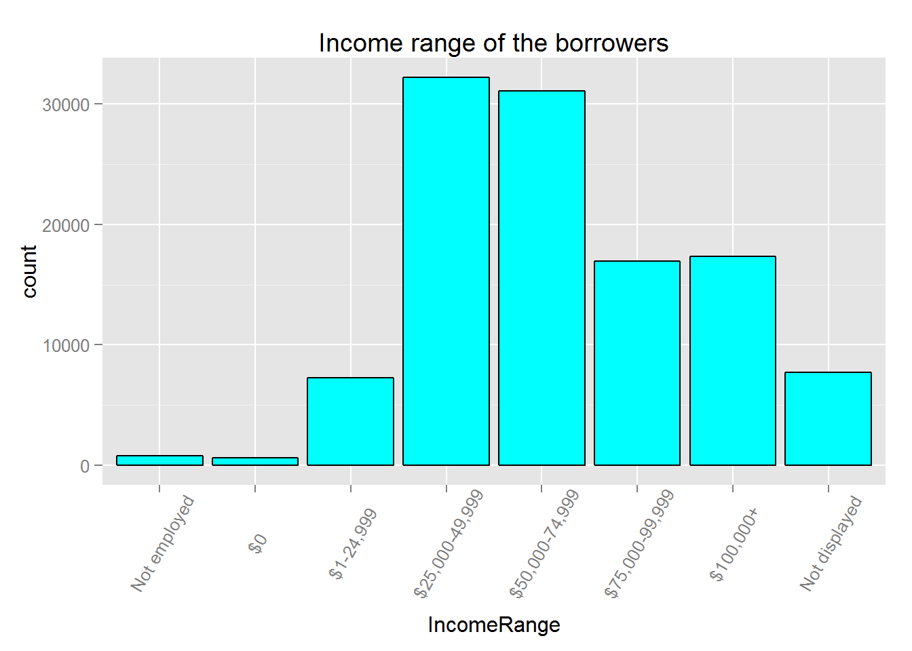
Next I check how many of the incomes are verifiable.
We can see that about 92.4% of incomes are verifiable. So we could trust the income range.
Another interesting variable is DebtToIncomeRatio, which shows the debt to income ratio when the borrower’s profile was pulled.
We could see from the above histogram that most of the borrowers keep the ratio well below 50%.
Now I want to see the rating given by Prosper towards the buyers. There are two kinds of rating provided by Prosper: one is in the numeric form, the other is in the letter form. We could see from the following comparison that either form has 29084 missing values. So I just pick the letter form randomly. Note that here, rating “AA” is the best rating, while “HR” is the worst rating.
## Min. 1st Qu. Median Mean 3rd Qu. Max. NA's
## 1.000 3.000 4.000 4.072 5.000 7.000 29084##
## AA A B C D E HR
## 5372 14551 15581 18345 14274 9795 6935 29084We could see that most of the borrowers don’t have ratings. This is because borrower rating was introduced in July 2009. For the borrowers who have ratings, most of them are rated as “A”, “B”, “C” or “D”.
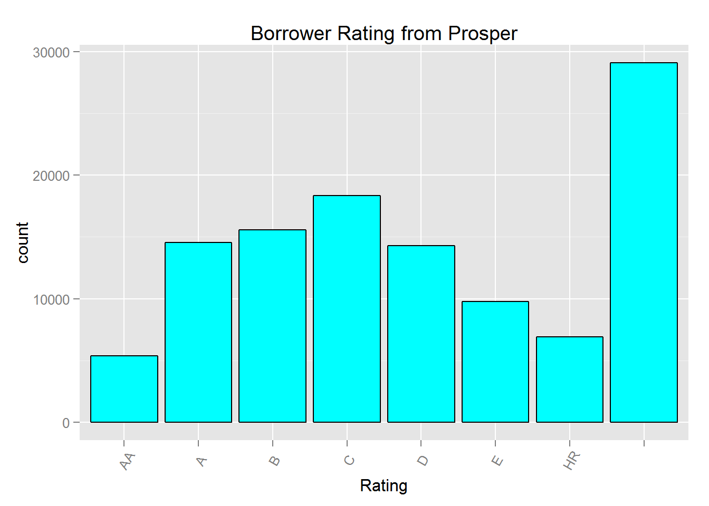
Another variable similar to Prosper’s borrower rating is Prosper’s score towards each borrower, which is the risk built using historical Prosper data. The documentation says the score ranges from 1 to 10, with 10 being the best, or lowest risk score. However, there are the score ranges from 1 to 11 in the dataset.
We can see that except for the missing values, borrowers’ score are approximately normally distributed. Most of the borrowers have score ranging from 4 to 8.
Since we also have borrower’s credit score from credit rating angecies, let’s investigate it.
Surprisingly, the lower and upper range of the borrower’s credit score resemble each other. It appears to me that in order to get a Prosper loan, you’d better have a credit score over 620.
Next I would like to know the purpose of the loans. Therefore I investigate the listing category variable.
## int [1:113937] 0 2 0 16 2 1 1 2 7 7 ...From the above figure, we could tell that most loans on Prosper are for Debt Consolidation. Excluding the Not Available and Other purposes, most of the loans go into Home Improvement, Business, Auto, and Personal Loan. Categories like RV (recreatonal vehicle), Boat, Vacation only account a small portion of the loan. Therefore, I conclude that most the people borrow money for necessary needs while not for entainment.
Since borrowers’ interest rate is an important factor, let’s take a look at this variable.
We could see that the rate approximately follows a normal distribution with mean around 0.18.
The length of a loan is also an important factor for both the borrower and investor. So let’s take a look at this variable.
We could see from this barplot that the majority of the loans has the length of 36 months. About 20% of loans have length of 60 months. Only 1.4% of the loans have length of 12 months.
Next, I want to investigate the delinquent amount of the borrower.
We can see that the delinquent amount for almost all the borrowers is 0.
Now, let’s look at the borrower’s geographical informaiton. I first count the number of borrowers in each state, then color the map according to this number.
As we can see from this map, California, Texas, Georgia, Florida, and New York have the most borrowers. These are the most populous and economically prosperous areas as well.
Recommendation is also an important factor for loans.
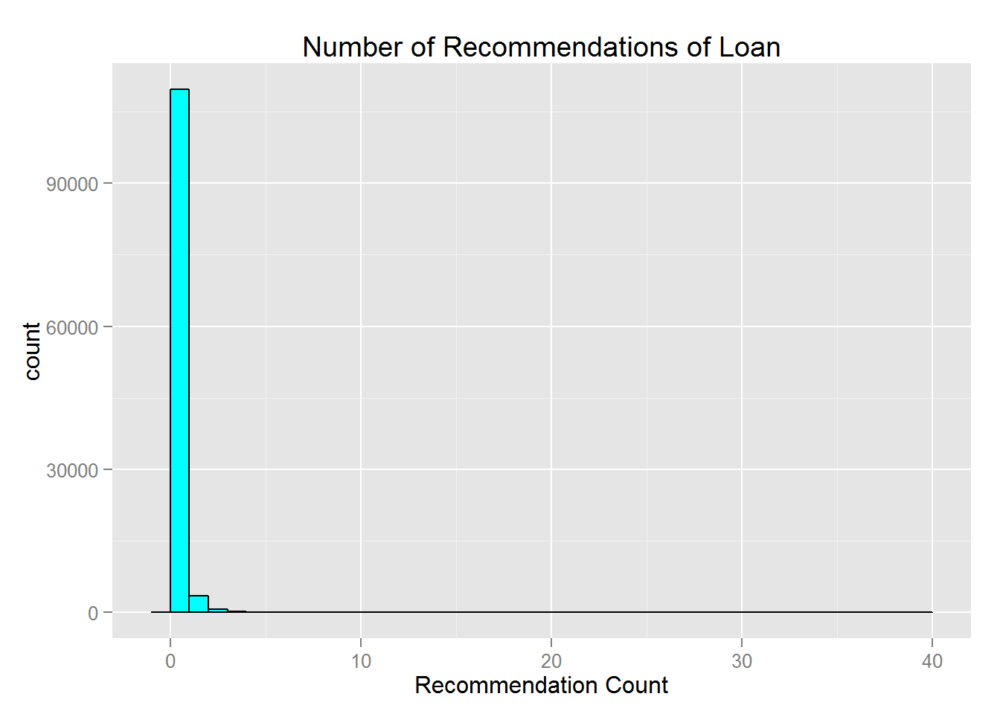 We can see that most loans do not have any recommendations.
We may also take a look at the number of investors of each loan.
We can see that this data right skewed. Most of the loans have less than 50 investors.
Finally, let’s look at the lenders’ profit, which is contained in the variable LenderYield.

Comparing this histogram to the Borrowers’ rate histogram, I find them to be nearly identical.
Bivariate Analysis
I first look into the relationship between the length of a loan and the yield of the lender.
We could see that most of the loads are for 36 months. And 36 months also have very high return, such as 0.3 compared to other two terms. Given that 36-month is much shorter than 60-month, and 36-month even has higher return rate, I would suggest the lenders putting their money into 36-month loans.
Next, I look at the borrower’s rate with different income range.
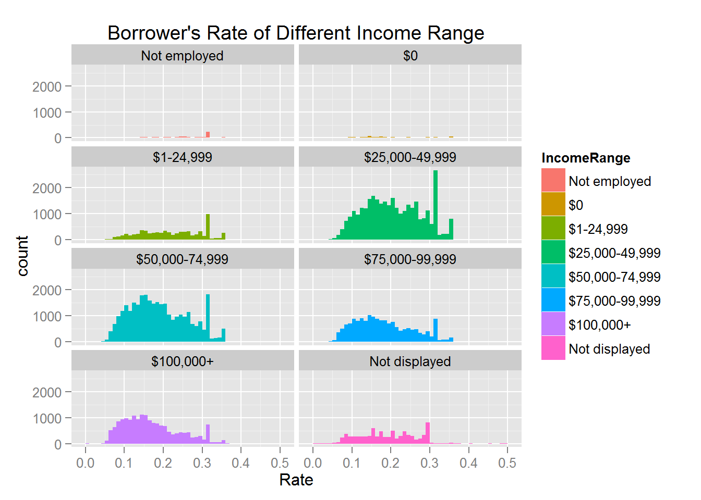
We could see that within each income range, the rate seems to be normally distributed. About half of the borrowers in each income range have rate less than 0.2, and the other half greater than 0.2.
Now I check the relationship between the delinquent amount and income range.
We could see that among different income ranges, there are no big differences. All of income levels have small delinquent amount.
Let’s see how the number of investors and the lender yield are correlated.
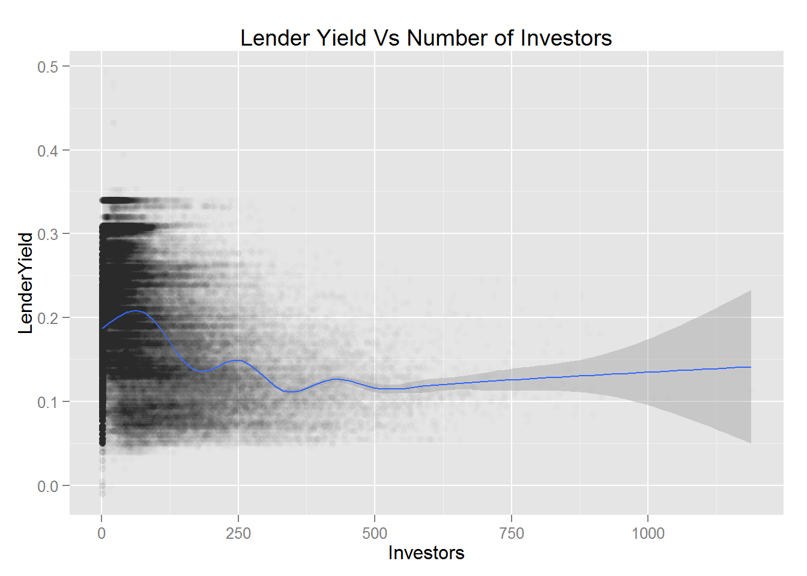
According to the above scatter plot, it seems that there is no strong correlation between these two variables. We could calculate their correlations as follows.
## [1] -0.2741739The result is -0.2741739, which indicates that the correlation is not very strong.
Does different states have different yields?
From the above plot, we can see that states in the south, e.g., Mississippi, Alabama, Arkansas, Tennessee have very high yields on average. States in the middle, for instance, Colorado, Oklahoma, Kansas, Nebraska have slightly lower yield.
Now let’s look at the relationship between lender yield and the score from Prosper. In common sense, investors want to lend their money to someone trustable.
From the boxplot above, we could see that, except for some outliers, lending money to the borrower of low Prosper score seems to yield higher return. To confirm this, let’s look at the relationship between the Prosper rating and lender yield.
Since AA is the highest rating and HR is lowest rating, the same conclusion holds. That is lending money to low rating borrowers will produce higher returns. This is very interesting and kind of counter-intuitive. However, after careful thought, I think it also makes sense. Since when Prosper lend money to the lowe rating borrowers, they will set higher APR to compensate for the high risk of not getting money back. The following plot shows the different APR for different rating borrowers.
Therefore, we could conclude that lending money to low rating borrower could give us higher return.
How about different listing categories?
From this boxplot, it seems that there is not clear relationship between these two variables. Can the delinquent amount serve as a good indicator for lender yield?
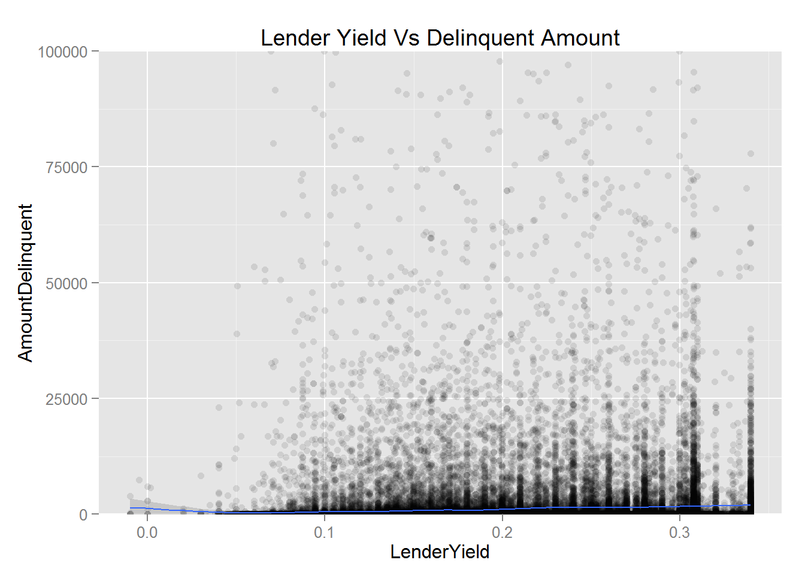
Since there are not many borrowers with delinquent amount larger than 0, it seems that there is a weak relationship between these two variables.
How about the number of recommendations? Does more recommendations usually result in higher return?
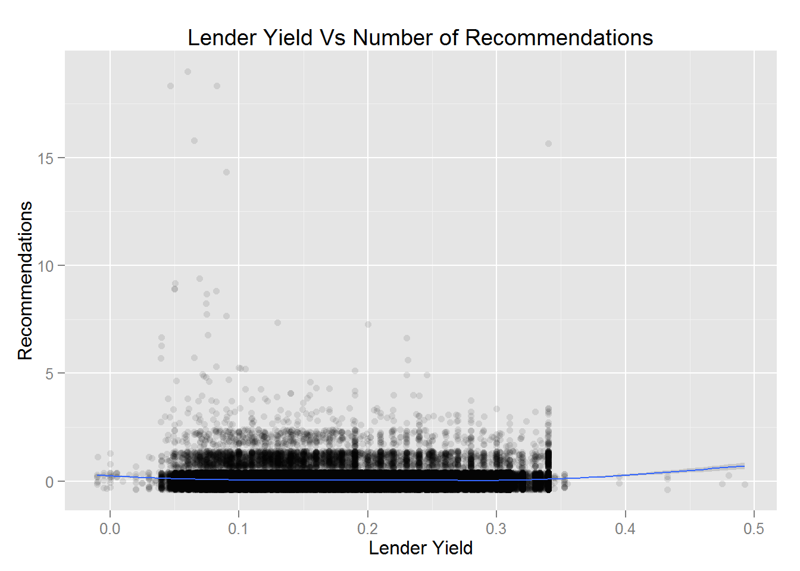
From this scatter plot, it appears to me that more recommendations do not always have high return.
Lastly, how about the borrower’s debt to income ratio? Can we lend our money to someone with high debt to income ratio?
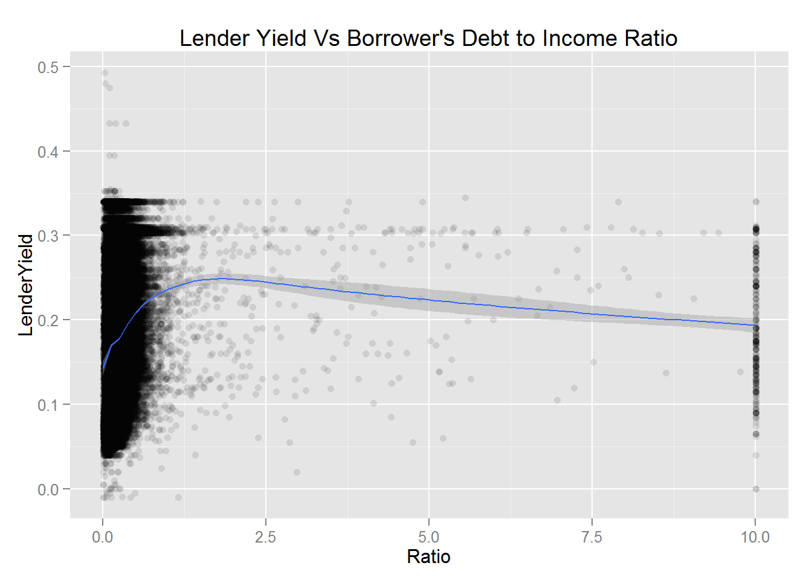
We could that the bulk of the borrowers has debt to income ratio less than 1. And it seems that higher ratio has higher return.
Multivariate Analysis
Firstly, let’s see if the number of investor for different income range borrowers have impacts on the returns?
From this plot, I didn’t see anything interesting ongoing on.
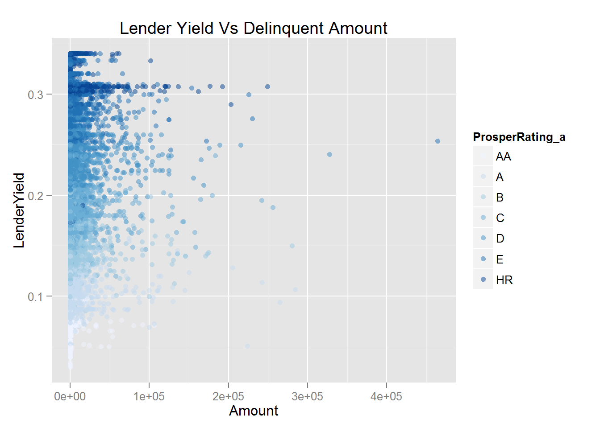
From the above plot, we could see that lower rating borrower and borrower with high delinquent amount seem to have higher return. How about debt to income ratio?
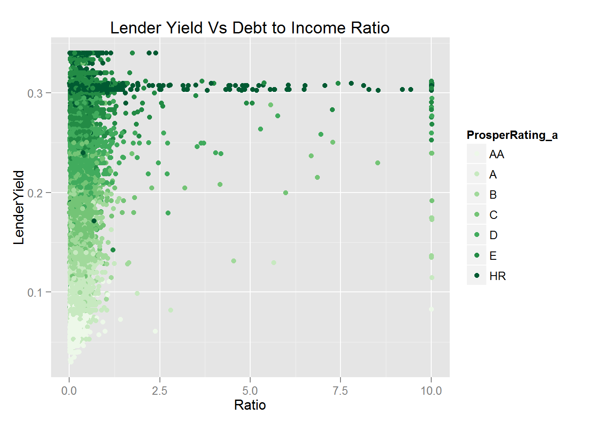
The above plot shows that there is a strong relationship between lender yield and debt to income ratio. If I take log of the lender yield, the relationship seems to be more clear.
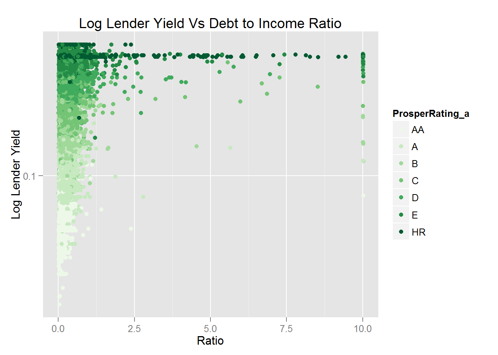
Are there some interactions between the length of loans and the Prosper rating for yield?
From this plot, we could tell that for each rating, 60-month loan tends to have the highest average return, while 12-month load tends to have lowest average return.
m1 = lm(LenderYield ~ DebtToIncomeRatio, data = prosper)
m2 = update(m1, ~. + AmountDelinquent)
m3 = update(m2, ~. + ProsperRating_a)
m4 = update(m3, ~. + Term)
m5 = update(m4, ~. + BorrowerState)
mtable(m1, m2, m3, m4, m5)##
## Calls:
## m1: lm(formula = LenderYield ~ DebtToIncomeRatio, data = prosper)
## m2: lm(formula = LenderYield ~ DebtToIncomeRatio + AmountDelinquent,
## data = prosper)
## m3: lm(formula = LenderYield ~ DebtToIncomeRatio + AmountDelinquent +
## ProsperRating_a, data = prosper)
## m4: lm(formula = LenderYield ~ DebtToIncomeRatio + AmountDelinquent +
## ProsperRating_a + Term, data = prosper)
## m5: lm(formula = LenderYield ~ DebtToIncomeRatio + AmountDelinquent +
## ProsperRating_a + Term + BorrowerState, data = prosper)
##
## ========================================================================================
## m1 m2 m3 m4 m5
## ----------------------------------------------------------------------------------------
## (Intercept) 0.178*** 0.177*** 0.069*** 0.034*** 0.027***
## (0.000) (0.000) (0.001) (0.001) (0.001)
## DebtToIncomeRatio 0.008*** 0.009*** 0.001*** 0.001*** 0.001***
## (0.000) (0.000) (0.000) (0.000) (0.000)
## AmountDelinquent 0.000*** 0.000*** 0.000*** 0.000***
## (0.000) (0.000) (0.000) (0.000)
## ProsperRating_a: /AA: A/AA 0.034*** 0.032*** 0.032***
## (0.001) (0.001) (0.001)
## ProsperRating_a: /AA: B/AA 0.075*** 0.072*** 0.072***
## (0.001) (0.001) (0.001)
## ProsperRating_a: /AA: C/AA 0.115*** 0.111*** 0.111***
## (0.001) (0.001) (0.001)
## ProsperRating_a: /AA: D/AA 0.166*** 0.164*** 0.164***
## (0.001) (0.001) (0.001)
## ProsperRating_a: /AA: E/AA 0.213*** 0.212*** 0.212***
## (0.001) (0.001) (0.001)
## ProsperRating_a: /AA: HR/AA 0.238*** 0.238*** 0.238***
## (0.001) (0.001) (0.001)
## ProsperRating_a: /AA 0.100*** 0.100*** 0.100***
## (0.001) (0.001) (0.001)
## Term: 36/12 0.034*** 0.034***
## (0.001) (0.001)
## Term: 60/12 0.045*** 0.045***
## (0.001) (0.001)
## BorrowerState: AK 0.001
## (0.003)
## BorrowerState: AL 0.017***
## (0.001)
## BorrowerState: AR 0.009***
## (0.002)
## BorrowerState: AZ 0.006***
## (0.001)
## BorrowerState: CA 0.010***
## (0.001)
## BorrowerState: CO 0.003
## (0.001)
## BorrowerState: CT 0.007***
## (0.001)
## BorrowerState: DC 0.007**
## (0.002)
## BorrowerState: DE 0.005*
## (0.002)
## BorrowerState: FL 0.004***
## (0.001)
## BorrowerState: GA 0.009***
## (0.001)
## BorrowerState: HI 0.002
## (0.002)
## BorrowerState: IA -0.010**
## (0.003)
## BorrowerState: ID 0.013***
## (0.002)
## BorrowerState: IL 0.011***
## (0.001)
## BorrowerState: IN 0.006***
## (0.001)
## BorrowerState: KS 0.003*
## (0.002)
## BorrowerState: KY 0.008***
## (0.002)
## BorrowerState: LA 0.006***
## (0.002)
## BorrowerState: MA 0.005***
## (0.001)
## BorrowerState: MD 0.006***
## (0.001)
## BorrowerState: ME -0.011*
## (0.004)
## BorrowerState: MI 0.007***
## (0.001)
## BorrowerState: MN 0.008***
## (0.001)
## BorrowerState: MO 0.014***
## (0.001)
## BorrowerState: MS 0.011***
## (0.002)
## BorrowerState: MT 0.013***
## (0.002)
## BorrowerState: NC 0.008***
## (0.001)
## BorrowerState: ND 0.039***
## (0.006)
## BorrowerState: NE 0.002
## (0.002)
## BorrowerState: NH 0.008***
## (0.002)
## BorrowerState: NJ 0.005***
## (0.001)
## BorrowerState: NM 0.014***
## (0.002)
## BorrowerState: NV 0.006***
## (0.002)
## BorrowerState: NY 0.005***
## (0.001)
## BorrowerState: OH 0.006***
## (0.001)
## BorrowerState: OK 0.004*
## (0.002)
## BorrowerState: OR 0.010***
## (0.001)
## BorrowerState: PA 0.009***
## (0.001)
## BorrowerState: RI 0.008***
## (0.002)
## BorrowerState: SC 0.006***
## (0.002)
## BorrowerState: SD 0.007*
## (0.003)
## BorrowerState: TN 0.008***
## (0.001)
## BorrowerState: TX 0.004***
## (0.001)
## BorrowerState: UT 0.011***
## (0.002)
## BorrowerState: VA 0.004***
## (0.001)
## BorrowerState: VT -0.004
## (0.003)
## BorrowerState: WA 0.005***
## (0.001)
## BorrowerState: WI 0.004**
## (0.001)
## BorrowerState: WV 0.005*
## (0.002)
## BorrowerState: WY -0.001
## (0.003)
## ----------------------------------------------------------------------------------------
## R-squared 0.004 0.009 0.724 0.731 0.733
## adj. R-squared 0.004 0.009 0.724 0.731 0.733
## sigma 0.074 0.074 0.039 0.038 0.038
## F 405.891 442.528 28603.531 24197.394 4336.118
## p 0.000 0.000 0.000 0.000 0.000
## Log-likelihood 125377.281 116149.035 178815.224 180005.414 180381.550
## Deviance 571.360 534.423 148.568 145.000 143.890
## AIC -250748.562 -232290.070 -357608.449 -359984.828 -360635.100
## BIC -250719.865 -232252.103 -357504.040 -359861.436 -360027.628
## N 105383 97905 97905 97905 97905
## ========================================================================================Final Plots and Summary
Plot One
Description One
The lender’s yield approximated follows a normal distribution, with center around 0.15. There is a spike around 0.3.
Plot Two
Description Two
From the above two plots, I made two observations. The first is that different states have different level of returns. States like Mississippi, Alabama, Arkansas, Tennessee tend to have high yields on average. Secondly, borrower rating from Prosper can be used to predict the result of the loan.
Plot Three
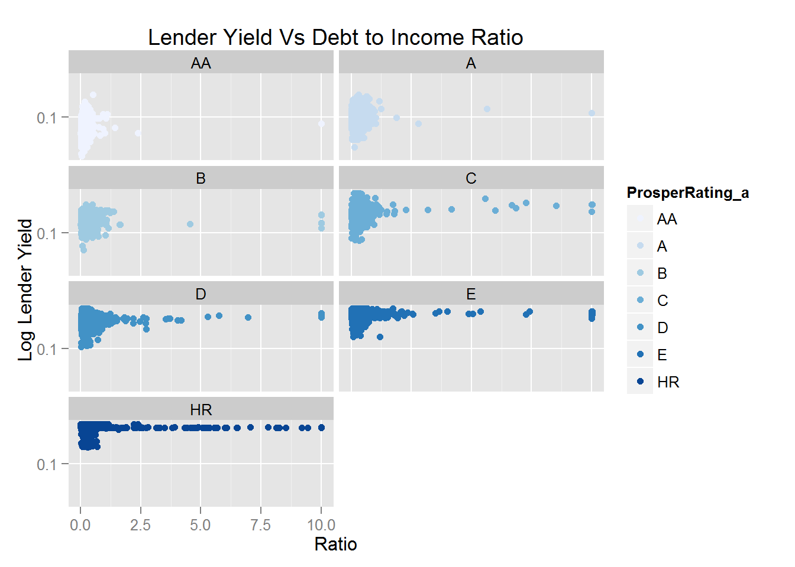
Description Three
The debt to income ratio can be served as an indicator for the yield of the loan. Although for low debt to income ratio borrowers it is hard to predict the yield, for high debt to income ratio borrowers, lending money to money usually have high return. Also, different lengths of loan tend to different yields. From the plot, we can see that on average, lending money to borrower with Prosper rating HR for 36 month will have highest return.
Reflections
The Prosper loan data set has 113,937 transaction record with 81 variables. I explored 15 out of these 81 variables. I started by looking at the documentation and tried to find interesting variables. Then I used various plots to check how these variable distributed. I struggled with understanding this dataset and asking interesting questions out of this dataset. To further understand this dataset, I tried to visualize the interaction between two variables. For instance, I investigated how BorrowerRate is correlated with LenderYield, etc. Then one question came into my mind: if I were a lender, what kind of borrower should I lend my money to? From the lender’s perspective, he doesn’t care about the borrower’s income range, the borrower’s credit score, the borrower’s purpose of borrowing money or the borrower’s delinquent amount. The only thing he cares about is to make more money. With this on mind, I made more bivariate plots and tried to find which variables are correlated with the LenderYield variable. I found that the rating from Prosper was an good indicator in a seemingly strange way. That is the lower the rating is, the higher the expected yield is. This is surprising at first. Then I found that this was true, since we need higher return to compensate high risk. I also found the BorrowerState, Term, AmountDelinquent, DebtToIncomeRatio helpful to predicting the loan result through multivariate analysis. To summarize my finding in one single sentence, you should lend your money to some borrowers from Alabama, with Propser rating HR, high delinquent amount, high debt to income ratio for 36 or 60 months.
Reference
- Prosper official site: https://www.prosper.com/
- rMaps: http://www.r-bloggers.com/rmaps-mexico-map/
- R Colors: http://vis.supstat.com/2013/04/plotting-symbols-and-color-palettes/
- Tips for rMaps and rCharts: http://daisukeichikawa.blogspot.com/2014/03/tips-for-rmaps-and-rcharts.html